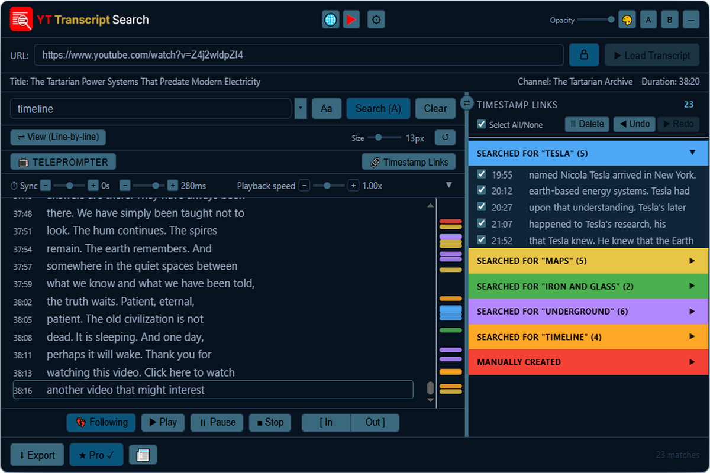

Load a video's Transcript, search for any word or phrase and you will be given a clickable Timestamp list of all the times it occurs. No more scrubbing through hours of video.

Sound familiar?
A lecture you half-listened to, and now exam week is here, and you need the one thing the professor said about that one concept — but it's buried somewhere in fifty minutes of audio you don't have time to sit through again.
A podcast guest said something brilliant. You remember the feeling of hearing it. You don't remember the minute.
A film had a line — that line — and you've scrubbed through the same twenty minutes three times trying to land on it.
You're researching someone and somewhere across a dozen interviews they said the thing you actually need to quote. Which one? You don't know. So you start watching.
Every one of these has the same shape: the words you need already exist, said out lloud, sitting inside a video you have access to right now — and the only way to find them is to sit there and wait for them to come around again.
That's the wall. Everyone watching long-form video hits it eventually.
YT Transcript Search is your wing man, your research assistant always at hand.
Free to install. Works on any YouTube video with captions
Open any YouTube video, click the extension icon, and the full transcript is right there — ready to search.
Any video with captions — lectures, podcasts, tutorials, interviews, music videos. If YouTube has it captioned, it's searchable.
Hit the YT Transcript Search icon in your browser toolbar. The overlay appears and loads the full transcript instantly.
Every match highlights instantly with surrounding context visible. The counter shows exactly how many results were found.
Click any result and the video jumps to that exact timestamp. Navigate all matches with Prev / Next.
Powerful search, multiple export formats, and a clean interface — free to use, with Pro unlocking even more.
Search the entire transcript as you type. Case-sensitive mode available. Results appear in milliseconds.
Click any result to jump to that precise moment in the video. Every result is a direct link to the spoken word.
Tick the moments that matter. Build a curated list of quotes from any video, then export them all at once.
TXT and copy-to-clipboard free. SRT, CSV, JSON & Markdown with Pro. All exports include metadata headers with title, channel, URL, and date.
Classic Dark, Arctic Light, Tokyo Night, Forest Terminal and eight more. The logo adapts automatically.
No account required. No data sent anywhere. Everything runs locally in your browser.
Wherever spoken word matters, YT Transcript Search saves time.
Find the exact lecture moment, pull quotes for essays, or search hours of documentary footage in seconds.
Find quotable moments from interviews and reference videos without watching them in full.
Follow along with native speakers. Search for phrases you heard but couldn't catch.
Accurately quote interviews and talks. Export clean transcripts with timestamps for reference.
Follow lyrics as they play. Search for any line in a song video and jump directly to that moment.
Search conference talks, training videos, and webinars for the exact content you need.
Free to install. Works on any YouTube video with captions